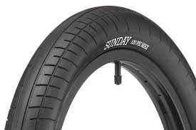
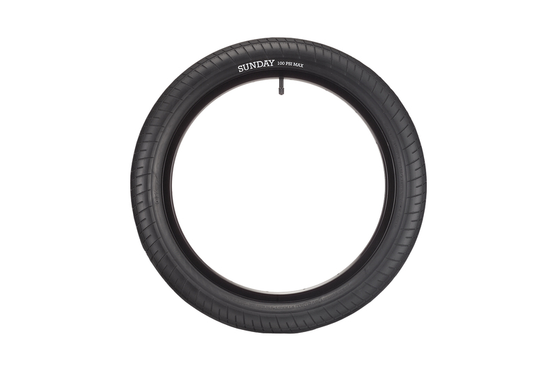

Володіє відмінним накатом і серйозної товщиною нова топова покришка Sunday Street Sweeper
| 840грн. |
Характеристики й опис
| Виробник - Sunday |
| Діаметр - 20. |
| Ширина - 2.4. |
| Тип - напівслік |
| Призначення - BMX |
| Матеріал корду - сталь |
| Вага - 720г |
| Максимальний тиск 100 PSI - |